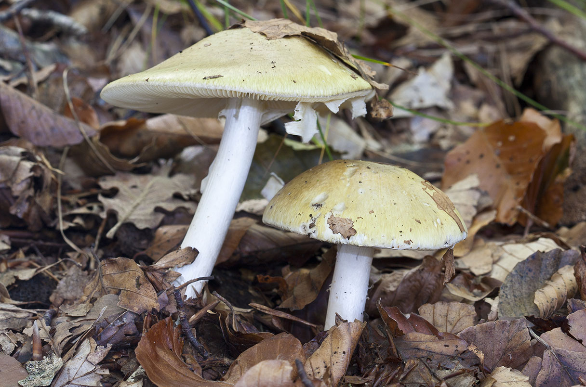
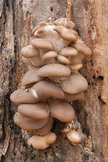
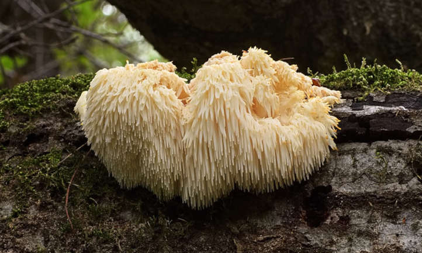

Poisonous
Many types of mushrooms are toxic to humans and animals. It is very difficult to tell which are poisonous or not. Don't ever eat mushrooms you find outside unless you have done research! Avoid mushrooms with white gills, a skirt, or a ring on the stem. Death cap mushrooms are one of the most deadly species on the planet.
Edible
Non-poisonous mushrooms, are the fleshy, edible fruit bodies of that particular species of macrofungi. Many mushrooms are used as meat replacements, because of the similar consistency as beef or chicken, such as the oyster mushroom. They are high in vitamins B2, B3, B5, and are high in minerls like selenium, phosphorous, and potassium.
Medicinal
Medicinal fungi contain metabolites, or can be induced to produce metabolites through biotechnology to develop prescription drugs. Many fungi have been clinically proven to help reduce anxiety and depression, such as the Reishi, Lion's Mane, and Cordyceps mushrooms.
